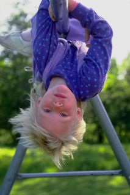
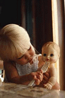

Ressources en Développement
Les psychologues humanistes !
Anonyme
Ce texte est tiré du magazine électronique
" La lettre du psy"
Volume 7, No 10: Novembre 2003
| Avant d'imprimer ce document | Mise en garde | Autres articles |
(Merci à Gilles Lussier qui a fourni l'original dont s'inspire cette version.)
Si on en croit les bureaucrates qui réglementent notre vie, tous ceux d'entre nous qui ont plus de 35 ans devraient être morts depuis longtemps. Normalement, si vous avez vécu votre enfance entre 1940 et 1975, vous n'auriez pas dû survivre.
-
Ceci mérite des explications...
Dès le départ, nous étions condamnés: notre lit de bébé était recouvert d'une généreuse couche de peinture à base de plomb, de couleur vive pour être bien appétissante. Nos hochets n'étaient pas mieux: ils n'avaient pas été étudiés pour nous empêcher de les mordre ni approuvés par trois agences gouvernementales.
Dès notre plus jeune âge, nous devenions capables d'ouvrir n'importe quelle porte d'armoire et la plupart des contenants, surtout ceux des médicaments. En fait, même les personnes souffrant d'arthrite y arrivaient facilement!
Et ça n'allait pas en s'améliorant... nous conduisions nos tricycles puis nos bicyclettes partout hors des pistes réservées, sans surveillance et sans casque protecteur. Nous en profitions évidemment pour pratiquer nos sauts et faire des courses avec les amis.
Nos promenades en automobile se faisaient sans ceinture de sécurité ni coussin gonflable. Parfois, les belles journées d'été, nous avions même la chance de faire une ballade dans la boîte d'une camionnette ou, privilège suprême, sur un tracteur ou un voyage de foin. (Passons pudiquement sous silence les risques innommables que nous prenions en voyageant "sur le pouce".)
Nous buvions l'eau directement du boyau d'arrosage et non d'une bouteille. Quelle horreur! Nous mangions des gâteaux, du pain et du beurre, et nous buvions des liqueurs douces riches en sucre, mais jamais cela ne nous faisait engraisser, car nous passions notre vie à jouer dehors. Nous partagions même nos liqueurs avec nos amis, dans la même bouteille, au risque d'en mourir.

Nous passions des heures à nous construire des voitures de course pour descendre la côte, en constatant seulement après les premiers essais que nous avions oublié les freins! Mais après quelques descentes terminées dans les buissons, nous apprenions à résoudre ce problème mineur.Nous partions le matin et pouvions passer à journée à jouer; personne n'y trouvait à redire pourvu que nous soyons rentrés à la tombée du jour. Nous n'avions ni téléphone cellulaire ni téléavertisseur. Personne ne pouvait nous rejoindre de la journée. Nos parents étaient parfois inquiets de nos aventures, mais ils choisissaient de vivre eux-mêmes leur angoisse pour supporter notre développement.
Nous n'avions pas non plus de Nintendo ou de Playstation, ni jeux vidéos, ni 99 chaînes de télévision, ni location de vidéos, ni son ambiophonique ou cinéma maison, ni ordinateur personnel, ni Internet, ni sites de clavardage! Quel vide!
- Nous n'avions que des amis!
Nous aimions toujours jouer au ballon-chasseur même si c'était parfois douloureux lorsque nous nous faisions attraper. Nous tombions des arbres, nous subissions des coupures, des dents cassées ou des fractures, mais personne n'allait en cour pour ces incidents banals. C'était tout simplement des accidents normaux et il n'y avait personne à blâmer à part nous-mêmes.
Il nous arrivait même de nous battre ou de nous frapper entre nous et d'en sortir avec des bleus. Nous apprenions peu à peu à résoudre et à surmonter nos différents, ainsi qu'à vivre avec ces douleurs du quotidien.
Nos équipes sportives faisaient une sélection; ce n'était pas tous les enfants qui étaient acceptés. Ceux d'entre nous qui étions refusés devaient apprendre à vivre avec la déception. Nous allions seuls à la patinoire, en traînant nous-mêmes notre équipement et personne ne nous aidait à enfiler notre uniforme ou à lacer nos patins. (Il faut reconnaître que notre équipement était plutôt sommaire.)

C'était la même chose à l'école: certains élèves étaient moins brillants que d'autres et échouaient leur année. Ils devaient reprendre la même classe, comme s'ils avaient encore quelque chose à y apprendre. Nos professeurs insistaient même pour que nous fassions nous-mêmes nos devoirs, estimant que nos parents n'avaient pas besoin d'apprendre les nouvelles méthodes d'enseignement. Nous n'avioins pas le choix: il faillait bien trouver les moyens pour apprendre nous-mêmes nos leçons sans y accaparer nos parents.La correction des examens, quelle horreur, n'était même pas pondérée en fonction des résultats. Nous étions tout simplement responsables de nos réponses comme de nos actes et tout le monde trouvait normal qu'il y ait toujours des conséquences.
Jamais nous n'aurions pensé que nos parents puissent verser notre caution s'il nous arrivait de violer la loi. Imaginez ça, ils allaient même jusqu'à appuyer la police et nos professeurs plutôt que de les agresser!
Les résultats
Est-ce un hasard si on trouve dans cette génération une abondance de personnes capables de prendre des risques et de résoudre des problèmes; parmi les meilleurs de tous les temps? Les 50 dernières années ont été le théâtre d'une explosion sans précédent dans l'innovation, les inventions et les idées nouvelles.
Notre enfance était marquée par la liberté et les choix, par les échecs et les succès, par les risques de la responsabilité. Nous avons dû apprendre à vivre avec chacune de ces réalités.
Si vous avez plus de 35 ans, vous faites probablement partie de ce groupe. Félicitations!
Anonyme
Commentaire
- Pourquoi oublions-nous tout ce qui nous a servi à nous développer lorsque nous tentons de transmettre à nos enfants les fruits de notre expérience? Pourquoi croyons-nous que la meilleure école de vie est un environnement aseptisé où tous les risques sont contrôlés?
Nous avons eu la chance de vivre notre enfance et de grandir dans un contexte différent, avant que les avocats et les gouvernements ne s'approprient le droit, pour notre bien, de régir notre vie et de nous dégager de nos responsabilités! Avons- nous raison d'en priver nos enfants afin de leur procurer un sort meilleur que le nôtre?
Quelle sorte d'existence leur proposons-nous ainsi? Que devront-ils apprendre pour survivre lorsque nous ne serons plus là pour assumer leurs responsabilités et les protéger des risques de la vie ?